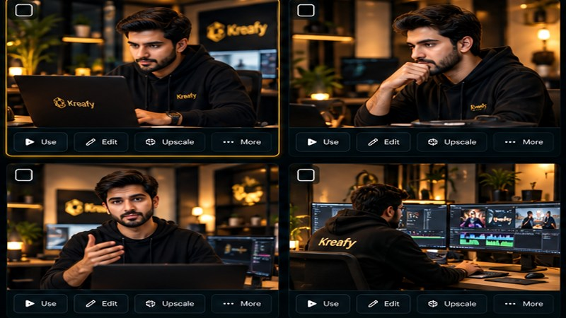

✦
KApp Core & Navigation
Choose content type, resolution and workflow
Workflow & ConfigurationInput and scope
STEP 03 • WORKSPACE
Choose content type, resolution and workflow
New Project WizardPreview / review
Workspace Preview

Asset 01
Opening Hook · Concept

Asset 02
Research Visual · Concept

Asset 03
Main Character · Concept

Asset 04
Detailed Shot · Concept

Asset 05
Key Example · Concept

Asset 06
Closing Scene · Concept
Inspector & Advanced ControlsPresets ▾
Data storage⌄
Theme⌄
Autosave
Ask before paid API
CPU threads2
AI model⌄
Recovery checkpoints
ⓘ UI review only. Actual engine availability, voice catalog, quotas and generation settings must be verified during implementation. No feature is running.
Settings Change ReviewSave, validate, revert
Local-first
No credentials required for offline tools
Cost-aware
Paid call must require approval
Protected
Local secrets excluded from Git